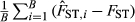

The empirical Bayes estimators of fine‐scale population structure in high gene flow species
Abstract
An empirical Bayes (EB) pairwise FST estimator was previously introduced and evaluated for its performance by numerical simulation. In this study, we conducted coalescent simulations and generated genetic population structure mechanistically, and compared the performance of the EBFST with Nei's GST, Nei and Chesser's bias‐corrected GST (GST_NC), Weir and Cockerham's θ (θWC) and θ with finite sample correction (θWC_F). We also introduced EB estimators for Hedrick’ G’ST and Jost’ D. We applied these estimators to publicly available SNP genotypes of Atlantic herring. We also examined the power to detect the environmental factors causing the population structure. Our coalescent simulations revealed that the finite sample correction of θWC is necessary to assess population structure using pairwise FST values. For microsatellite markers, EBFST performed the best among the present estimators regarding both bias and precision under high gene flow scenarios (). For 300 SNPs, EBFST had the highest precision in all cases, but the bias was negative and greater than those for GST_NC and θWC_F in all cases. GST_NC and θWC_F performed very similarly at all levels of FST. As the number of loci increased up to 10 000, the precision of GST_NC and θWC_F became slightly better than for EBFST for cases with , even though the size of the bias remained constant. The EB estimators described the fine‐scale population structure of the herring and revealed that ~56% of the genetic differentiation was caused by sea surface temperature and salinity. The R package finepop for implementing all estimators used here is available on CRAN.
Introduction
Wright's FST is the most widely used measure of genetic divergence among populations in the fields of population and evolutionary genetics (Weir & Hill 2002; Holsinger & Weir 2009), conservation and management (Palsbøll et al. 2006), and seascape (Selkoe et al. 2008) and landscape genetics (Storfer et al. 2010). Wright (1951) defined FST as the correlation between randomly sampled gametes relative to the total drawn from the same population. Nei (1973) derived a formula to measure the genetic differentiation between populations denoted by GST, which is identical to FST (Appendix 1). The numerator of GST represents the variance in allele frequencies between populations. Therefore, its estimate is biased, even though the estimated allele frequencies are unbiased (Appendix 2). To overcome this problem, Nei & Chesser (1983) derived unbiased estimators for the numerator and denominator of GST, and corrected the bias in GST (hereafter GST_NC). Weir & Cockerham (1984) also proposed a bias‐corrected moment estimator for the coancestry coefficient in the analysis of variance framework. θWC is the ratio of the unbiased estimators of the between‐population variance of allele frequencies to the total variance component and is an estimator of FST (Weir & Cockerham 1984). These FST estimators were originally developed to estimate the mean FST over a metapopulation based on a set of population samples, which is often called global FST (e.g. Pérez‐Lezaun et al. 1997). GST considers inference on observed set of populations sampled, while θWC considers replicates of a set of populations (Weir & Cockerham 1984). In addition to the global FST, FST values between pairs of population samples (pairwise FST) are routinely used to estimate population structure.
In high gene flow species, such as marine fish, the weak genetic signal of population differentiation hinders the precise estimation of population genetic parameters (Waples 1998). Larger sampling variances for smaller sample sizes would also make it more difficult to correctly estimate FST. Thus, there is a high risk of obtaining biased FST values, resulting in the detection of spurious population structures. Because allele frequencies are very similar among populations in such cases, estimation of the between‐population heterozygosity is not precise, especially when highly polymorphic markers such as microsatellite loci are used. To address this problem, we previously proposed an empirical Bayes (EB) method, which generates posterior distributions of pairwise FST using a Dirichlet distribution [or a beta for single‐nucleotide polymorphisms (SNPs)] based on the GST formula (Kitada et al. 2007). The mean of the posterior distribution is defined as EBFST estimator. However, the performance testing was limited to GST, and θWC was evaluated via a function of GST using parametric simulations based on a Dirichlet distribution.
In this study, we explored the performance of our EBFST estimator relative to other established methods using coalescent simulations that generate genetic population structure mechanistically. In addition, we introduced new EB estimators (hereafter EBGST_H and EBDJ) for G’ST (Hedrick 2005; GST_H) and D (Jost 2008; DJ). We applied these estimators to publicly available data set of Atlantic herring (Clupea harengus) SNP genotypes and inferred the population structure. We also evaluated the power to detect environmental effects, such as those of sea temperature, salinity, and geographical distance, on the herring FST, taking the correlation between FST values into account based on regression analyses using bootstrapping. Atlantic herring is distributed across a wide geographical area with steep gradients of salinity and sea surface temperature from the North Sea to the inner Baltic Sea, but its FST values were reported to be very small (Bekkevold et al. 2005; Gaggiotti et al. 2009). Thus, herring is one of the best species to test the performance of the EB estimators in high gene flow scenarios.
Materials and methods
Performance of FST estimators by coalescent simulations
To test the performance of FST estimators, we conducted coalescent simulations using the software ms (Hudson 2002) and generated genotype data under Wright's island model. The number of populations sampled was set to 30. In each population, microsatellite genotypes were obtained from 50 individuals and SNP genotypes were obtained from 25 individuals. The number of markers was set to 10 and 60 for microsatellites, and 300 and 10 000 for SNPs. We generated genotypes for eight levels of the true FST value, 0.001, 0.002, 0.004, 0.008, 0.016, 0.032, 0.064 and 0.128, which cover the extent of population differentiation from marine fish to human. The true FST values for microsatellite genotypes were computed under the infinite allele model given by Eq. eqn 3 in the paper by Rousset (1996) as:
Here, μ is the mutation rate per generation for all alleles, m is the migration rate per generation, and r is the number of subpopulations sampled from a metapopulation. We substituted σ = 0 for hermaphroditic populations. The true pairwise FST values for SNP genotypes were computed as (Wright 1951). In the coalescent simulations, we set the diploid population size to N0 = 500 (which corresponds to an effective population size of Ne=1 000), and the migration rate was given by . The mutation rate for the entire microsatellite locus was set to μ = 5 × 10‐5 per locus per generation to generate the mean number of alleles (~20) for marine fish (DeWoody & Avise 2000), which is an order of magnitude smaller than μ = 10−3 − 10−4 for human microsatellites (Sun et al. 2012). For SNPs, we set 4N0μ = 0.3 to generate a heterozygosity value of ~0.3, which is consistent with observations of heterozygosity in Atlantic herring, namely 0.31 ± 0.01 (Limborg et al. 2012a).
We computed pairwise FST values for GST, GST_NC, θWC and EBFST estimators based on the generated genotype data. Additionally, we used a modified calculation of θWC, termed θWC_F, to account for the fixed sampling of population pairs because θWC accounts for the replication of sampled populations (r). Our finite sample correction replaces a with a(r − 1)/r in Eq. eqn 2 on p. 1359 of the paper by Weir & Cockerham (1984). This was done because the pairwise FST value is calculated for specific population pairs, so applying the fixed‐effect model of population sampling (Weir 1996) is appropriate. We assumed that the scale parameter (θ) of a Dirichlet (for microsatellite loci) or a beta (SNPs) distribution is common to all loci, but that mean allele frequencies differ for each locus in the EB FST estimation. The scale parameter (θ) was estimated numerically by maximizing the marginal likelihood function under this assumption [Eq. eqn 2 in the paper by Kitada et al. 2007]. The simulation procedure was replicated 10 times, and a total of B = 10 × 30(30 − 1)/2 = 4350 pairwise FST values were obtained for each FST estimator. The mean bias (MB)  and root mean squared error (RMSE) were compared.
EB estimators of other differentiation estimators
Posterior distributions for any parametric functions of gene frequencies can be generated by the EB procedure (Kitada et al. 2000). Therefore, the posterior distributions of the new GST‐related measures GST_H (Hedrick 2005) and DJ (Jost 2008) are easily introduced as,
Population structure of Atlantic herring
We analysed the publicly available SNP genotype data over the 281 loci in 21 Atlantic herring samples (n = 607) (Limborg et al. 2012a,b). Genotype data obtained during different years from the same sampling locations were combined because there was no difference among years (Limborg et al. 2012a), resulting in 18 samples. The 18 sampling locations are abbreviated as follows: NOR (Norway), ICE (Iceland), SHE (Shetland), WIR (Western Ireland), CLS (Celtic Sea), IRS (Irish Sea), EC (English Channel 1999/2009), CNS (Central North Sea), RF (Ringkøbing Fjord), LIM (Limfjord), SKA (Skagerrak), KAT (Kattegat), RUG (Rügen 2003/2009), HB (Hanӧ Bay), GD (Gdansk), GR (Gulf of Riga 2002/2008), GF (Gulf of Finland) and BB (Bothnian Bay). We calculated the pairwise EBFST, GST_NC and θWC_F values based on the 281 SNPs, including 16 outlier loci that were significantly correlated with environmental factors, such as annual mean temperature and salinity (Limborg et al. 2012a). GST was also calculated to determine the effect of the bias correction on the estimators compared with the original FST definition. We calculated θWC using genepop4.2 (Raymond & Rousset 1995; Rousset 2008). We also calculated the new differentiation estimators, GST_H and DJ (Dest in Jost 2008), based on the unbiased estimators of HT and HS (Nei & Chesser 1983), and EBGST_H and EBDJ using finepop1.3. Based on these pairwise FST and the new differentiation estimates, we depicted the population structure by drawing upgma trees.
Detecting effects of environmental factors on genetic differentiation
We performed regression analyses of the pairwise FST values against geographical distance and the differences in sea surface temperature and sea surface salinity to examine the effect of environmental variables on population differentiation using the 281 SNPs from the work of Limborg et al. (2012a) (Appendix S1, S2, Supporting information). We evaluated the predictive power of explanatory (environmental) variables and their combinations, instead of testing correlations between each explanatory valuable and the pairwise FST values by the partial Mantel test, to avoid the potential bias caused by correlations among the elements of distance matrices (Guillot & Rousset 2013). If we do not take account of correlations in FST values between pairs of sampling points, the standard errors of the regression coefficients may be underestimated. This would result in a radical significance test of environmental variables. To overcome this problem, we conducted bootstrapping to increase the precision of the regression coefficients. We resampled locations with replacement (18 local samples, n = 607). We also resampled the member individuals with replacement from the sampled populations.
We calculated pairwise EBFST and θWC_F values using finepop1.3 for each bootstrap sample and estimated regression coefficients for the FST values. This procedure was iterated 100 times, and the standard deviation (SD) of the regression coefficients was calculated. We then computed the Z‐value by dividing the estimated mean coefficient by its SD for each regression coefficient. The Z‐value follows a normal distribution N (0, 1) and therefore provides a P‐value for the significance of each regression coefficient. All possible model combinations for the environmental explanatory variables were examined, including their interactions with EBFST and θWC_F. The full model was as follows:
Here, D is the shortest ocean path, and T and S are the absolute differences in sea surface temperature and sea surface salinity between‐population pairs, respectively. The parameters β1, …, β7 are the partial regression coefficients. As the objective variables (pairwise FST values) were correlated, the effective sample size was less than the actual number of pairs; thus, it was necessary to modify the Akaike Information Criterion (AIC) with the likelihood assuming iid error terms (Akaike 1973) to select the explanatory variables. We used the Takeuchi Information Criterion (TIC; Takeuchi 1976; Burnham & Anderson 2002), which considers the effective sample size (Kish 1965; Skinner et al. 1989) as an extension of the AIC:
Results
Coalescent simulations
Our coalescent simulations revealed that the finite sample correction of θWC is necessary to properly assess the population structure using pairwise FST values (Fig. 1).
For microsatellite genotypes, the mean ± SD (range) number of alleles was between 21.4 ± 4.3 (12–31) and 24.2 ± 4.7 (15–33). The results for GST indicated the performance of the FST estimator without bias correction, and the bias was positive (Fig. 1a, b, Table S1, Supporting information). EBFST performed the best among the estimators regarding both bias and precision when FST ≤0.032. The bias and variance of θWC were greater than for GST when , and the median of θWC values was approximately double those of GST_NC, θWC_F, and EBFST. GST_NC and θWC_F performed the same for all levels of FST. The RMSE of the EB FST estimator was half to one‐third the size of the RMSE of the other estimators for the high gene flow scenarios of . The difference in RMSE diminishes with a decreased level of gene flow and becomes almost the same among the estimators when . Increasing the number of loci from 10 to 60 was ineffective at reducing the bias but improved the precision for all FST estimators.
For SNP genotypes at 300 loci, the RMSE of the EBFST estimator was the smallest in all cases, and half or one‐third the size of those of the other estimators for the high gene flow scenarios where , although the EBFST estimator had greater negative bias than GST_NC and θWC_F (Fig. 1c, d, Table S2, Supporting information). Consistent with our results obtained using microsatellite markers, the difference in RMSE diminishes with a decreased level of gene flow. Additionally, the relative bias diminishes with a decreased level of gene flow. The variance of the estimators decreased with an increase in the number of loci, whereas the bias remained constant. As a result, the unbiased estimators GST_NC and θWC_F may outperform the EB estimator in high‐throughput data because of the effect of shrinkage. Still, in the simulation using 10 000 loci, the RMSE of the EBFST estimator was half that of the other estimators for a high gene flow scenario where and comparable for scenarios with lower levels of gene flow.
Population structure of Atlantic herring
The means ± SDs of the pairwise FST estimates were 0.01427 ± 0.00383 for GST, 0.00619 ± 0.00357 for GST_NC, 0.01185 ± 0.00710 for θWC, 0.00595 ± 0.00356 for θWC_F and 0.00482 ± 0.00050 for EBFST (Fig. 2a). The mean GST (without bias correction) was 2.3 times larger than GST_NC, 1.2 times for θWC, 2.4 times for θWC_F and 3.0 times for EBFST. The mean EBFST decreased to 41% of that of θWC, 78% of that of GST_NC and 81% of that of θWC_F. The SDs for GST, GST_NC and θWC_F were ~0.004 and that for θWC was ~0.007, whereas that for EBFST was an order of magnitude smaller (0.0005). Interestingly, the new differentiation estimators showed very similar values to FST estimators. GST_H values had a similar distribution to θWC, DJ was very close to θWC_F, and EBDJ was close to EBFST (Fig. 2a). Estimates of GST_NC were highly correlated with those of GST_H (r = 0.9999), θWC_F (r = 0.9989) and DJ (r = 0.9997) (Fig. 2b). The EBFST values decreased, but the correlations were quite strong with GST_NC (r = 0.9550) and θWC_F (r = 0.9541). The significance was very high for all combinations (P < 2.2e−16). The EBFST values were also strongly correlated with other EB estimators (r > 0.99). When we fitted a linear model of y = αx, the proportion estimates were for EBGST_H and for EBDJ (R2 = 1, P < 2.2e−16).
All estimators consistently described four large clusters, where the Baltic Sea (green) was associated with the Baltic–North Sea transition area (blue), and the North Sea (magenta)/British Isles (red) was associated with the North Atlantic (orange). An exception was GST, which localized the Baltic Sea apart from the other three clusters (Fig. 3a, b). All estimators identified a subcluster of SHL and CNS in the North Sea/British Isles except θWC_F. Interestingly, GST_NC, DJ and GST_H described the same population structure, although the differentiation for GST_H was approximately twice as large (Fig. 3b, c). θWC described the same population structure, but with slight differences in the Baltic Sea. θWC_F showed a similar pattern, with the difference that WIR associated with SHL and CNS. As for the EB estimators, EBFST and EBDJ provided the same population structure. EBGST_H also showed almost the same pattern, but with a slight difference in the Baltic–North Sea transition area, which was consistent with GST_NC, GST_H, θWC and DJ.
Effects of environmental factors on genetic differentiation
The best fit model for both EBFST and θWC_F included geographical distance, salinity and their interaction (Model 8) (Tables 1 and S3, Supporting information). TIC was slightly smaller when using annual mean sea surface temperature and salinity. The model fitting was much better in θWC_F (TIC = 314.48, R2 = 0.61) than in EBFST (TIC = 329.36, R2 = 0.56), showing that 56% of the EBFST fine‐scale population structure (Fig. 3b) was explained by sea surface temperature and salinity. The regression coefficients were consistent in both θWC_F and EBFST. Those for geographical distance were positive and highly significant, and those for salinity were also positive and significant, while interaction between geographical distance and salinity was negative and not significant.
| Model | EBFST | θ WC_F | |||||||
|---|---|---|---|---|---|---|---|---|---|
| No. | Variable | Estimatea | SDb | Z (=a/b) | P | Estimatea | SDb | Z (=a/b) | P |
| 8 | R2=0.5564 | R2=0.6064 | |||||||
| D | 0.5153 | 0.1714 | 3.0060 | 0.0003 | 0.5532 | 0.1682 | 3.2895 | 0.0010 | |
| S | 0.3505 | 0.1785 | 1.9770 | 0.0480 | 0.3462 | 0.1658 | 2.0876 | 0.0368 | |
| D × S | −0.1244 | 0.0695 | −1.7887 | 0.0737 | −0.1155 | 0.0751 | −1.5376 | 0.1242 | |
- a Based on FST estimates and explanatory variables.
- b Obtained from bootstrapping. D, geographical distance (shortest ocean distance); S, mean annual sea surface salinity. Bold values indicate significance.
Discussion
Our coalescent simulations revealed the need for the finite sample correction of θWC when assessing population structure using pairwise FST values, and demonstrated that the EBFST estimator performed the best with respect to bias and precision in high gene flow scenarios () when highly polymorphic markers, such as microsatellites, were used. For SNPs, the EBFST estimator had greater negative bias than GST_NC and θWC_F, but the precision was the highest in all cases when 300 SNPs were used. However, when using 10 000 SNPs, the precision became better for GST_NC and θWC_F under scenarios where . The EBFST estimate always takes positive values based on GST, while other estimators and their lower 95% confidence limits can take negative values when the true FST is very small. The empirical data analyses of the Atlantic herring SNPs demonstrated that the EBFST estimator identified fine‐scale population structure and that 56% of the genetic differentiation was explained by geographical distance and sea surface salinity. The new EB estimators, EBDJ and EBGST_H, identified the same and very similar population structures compared with that from the EBFST estimator.
Bias‐corrected GST_NC and θWC_F performed very similarly at all levels of FST. In contrast, θWC provided pairwise FST estimates ~2 times greater than those of GST_NC and θWC_F. Originally, both GST and θWC were developed to estimate FST (global FST) in a metapopulation based on a set of randomly selected population samples. The major difference in the two estimators GST_NC and θWC is the bias correction under the fixed‐ and random‐effect models of population sampling (Weir 1996). When estimating pairwise FST, the number of populations is two (r = 2 in θWC), which yields the correction term (r−1) of θWC in estimating the variance of allele frequencies over populations (s2 on p. 1360 in the paper by Weir & Cockerham 1984) as one. This should provide a between‐population variance that is twice GST_NC, which uses r instead of r − 1. Another difference is that θWC considers the variance component () for the third‐stage sampling of gametes in the denominator of the total variance (a + b + c) (see Eqs. eqn 2-eqn 4 on p. 1359–1360 of the paper by Weir & Cockerham 1984). When all sample sizes (n) of individuals are equal (ni = n), . Therefore, the sum of their correction term regarding in the denominator a + b + c becomes 0. As for the numerator, . The term is the average heterozygote frequency, and for ni = n. Therefore, the correction term in the numerator should take small values, and the effect of the third‐stage sampling variance component could be negligible when sample sizes (n individuals) are large enough.
In contrast, our EBFST estimator uses the original GST formula, and the bias is not corrected explicitly. However, the EBFST estimator accounts for sampling variances of populations (first‐stage sampling) and individuals (second‐stage sampling) by generating the posterior distributions of allele frequencies given the observed allele counts in sampled populations. An EB estimator of a population mean and/or rate that incorporates variance component structures is useful for small‐area estimation (Ghosh & Lahiri 1987). The idea is to ‘borrow strength’ from related areas to find more accurate estimates for a given area or, simultaneously, for several areas. The posterior distributions of allele frequencies generated in our EB estimation procedure gain strength from the set of sampled populations and shrink towards the true allele frequencies in a metapopulation. The EBFST can therefore be interpreted as a shrinkage estimator (Stein 1956). The results of our coalescent simulations suggest that the shrinkage is effective for highly polymorphic markers to correct estimates of allele frequencies even under small sample sizes, but not for SNPs because the allele frequencies of two alleles might be more precisely estimated than microsatellites given the sample size. The EB estimators, EBFST, EBGST_H and EBDJ, consistently identified the Atlantic herring population structure, which consisted of four large groups: (i) Baltic Sea; (ii) Baltic–North Sea transition area; (iii) North Sea/British Isles; and (iv) North Atlantic (Fig. 3). The population structure generally agrees with that inferred by the original study (Limborg et al. 2012a) and that obtained from the top 156 loci among the 281 loci ranked by their contribution to divergence of the four large clusters (Bekkevold et al. 2015). Our EB estimators provided a finer scale population structure without any prior information.
As for the new differentiation estimators, GST_H performed similarly to θWC, and DJ performed similarly to GST_NC and θWC_F for the Atlantic herring SNPs. The observed heterozygosity (Ho) was 0.31 ± 0.01 and was very similar in all samples [Table 1 in the paper by Limborg et al. (2012a)]. GST_H (Hedrick 2005) and DJ (Jost 2008) were developed for cases in which heterozygosity is high within each subpopulation but the subpopulations have significantly differentiated. In such cases, GST takes small values even though the actual differentiation is large, especially for cases with highly polymorphic markers such as microsatellite loci. Our analysis of the high gene flow Atlantic herring using SNPs might not be an appropriate example to test the characteristics of the new differentiation estimators. However, our results of coalescent simulations should be straightforward because they are functions of GST. There has been extensive discussion on the new differentiation measures (Heller & Siegismund 2009; Ryman & Leimar 2009; Gerlach et al. 2010; Leng & Zhang 2011; Whitlock 2011; Wang 2015). However, further study is needed for various levels of heterozygosity and genetic differentiation to comprehensively evaluate the performance of the new differentiation estimators including EBGST_H, EBDJ and EBFST.
The R package finepop 1.3.0 implements all estimators used in this study. It can be applied to genotype/haplotype data derived from common markers, including isozymes, mitochondrial DNA, microsatellites and SNPs. Accepted data formats include genepop and a frequency format for allele and haplotype frequencies in text files. The function read.genepop or read.frequency loads the data file and the population label file. EBFST calculates EBFST values and outputs the pairwise FST matrix. GstN, GstNC, and thetaWC.pair calculate pairwise FST values for GST (Nei 1973), GST_NC (Nei & Chesser 1983) and θWC_F (θWC of Weir & Cockerham (1984) with finite sample correction), respectively. GstH and DJ calculate the new differentiation measures; pairwise G’ST (Hedrick 2005) and DJ (Jost 2008) values are based on the unbiased estimators of HT and HS (Nei & Chesser 1983). EBGstH and EBDJ calculate the EB estimates for them. R script used in the herring case studies is provided to exemplify usages of finepop functions (Appendix S3, Supporting Information). The function of regression analysis of genetic population structure on environmental factors will also be included in the coming version.
Acknowledgements
We thank the editor, Michael M. Hansen and anonymous reviewers for their constructive comments, which improved our manuscript significantly. We appreciate Morten T. Limborg and his colleagues, whose analysis supported by intensive survey (Limborg et al. 2012a,b) motivated our TIC‐based variable selection. This study was supported by JSPS Grant‐in‐Aid for Scientific Research (B) awards 22380110 to SK, and 25280006 and 16H02788 to HK.
Appendix 1:: Relationship between GST and FST
Nei's GST formula (Nei 1973) defines FST between populations as:
 , where H0 is the frequency of all heterozygotes. These equations satisfy Wright's definition: (Nei & Chesser 1983).
, where H0 is the frequency of all heterozygotes. These equations satisfy Wright's definition: (Nei & Chesser 1983).
FST is defined as ‘the correlation between random gametes, drawn from the same subpopulation, relative to the total’ (Wright 1951; p. 328). FST is also defined as the ratio of the between‐population variance to the total variance of allele frequencies (e.g. Weir & Cockerham 1984). Here, we consider cases with multiple alleles as
We explicitly show the relationship between GST and FST between two populations (r = 2) with multiple alleles. The numerator of GST can be written as
HT is
Therefore, we have
The denominator of GST can be expanded as
The second term is as follows:
Thus, the denominator of GST equals that of Eq. eqn 2:
In general, the variance of observed random variables x (x1, …, xn) is expressed in Eq. eqn 3. Therefore, the numerator of FST between two populations is expressed as
For biallelic cases (m=2), HT = 2p(1 − p), and HT − HS = (p(1) − p(2))2/2. Then, we have Wright's FST definition (Wright 1951, 1965) of
 (eqn 3)
(eqn 3)Appendix 2: Relative bias and mean square error of the numerator of the FST estimator
We hereafter express the GST numerator (Eq. eqn 1) as . After Taylor series expansion, we obtain the FST estimator around the true value:
Therefore,
 and that of . In the case of high gene flow, that is, when is small, the
and that of . In the case of high gene flow, that is, when is small, the  relative bias becomes large. Using Eq. eqn 4, the relative mean square error of
relative bias becomes large. Using Eq. eqn 4, the relative mean square error of  is decomposed as
is decomposed as
The FST estimator numerator is expressed as the sum of the square difference in the allele frequencies between the two populations:
The bias of the estimator is explicitly given below and is the sum of the variance of the difference in allele frequencies:
 bias becomes larger for a larger number of alleles m. Because is small in the case of high gene flow, the
bias becomes larger for a larger number of alleles m. Because is small in the case of high gene flow, the  relative bias becomes large.
relative bias becomes large.
We begin with a two‐allele case to derive the explicit formula for the relative square error:
After Taylor series expansion, we obtain around the true value:
Therefore, the relative square error is calculated as:
 becomes larger for higher gene flow.
becomes larger for higher gene flow.
In general cases with m alleles, the Taylor series expansion is as follows:
The mean square error of the  denominator is as follows:
denominator is as follows:
Here, and substituting them into Eq. eqn 5, we have the simple form for the variance of the  denominator:
denominator:
The relative root mean square error is obtained as:
References
S.K. and H.K. designed the study. All authors analysed the data, wrote the manuscript and developed finepop. R.N. and H.K. wrote the R codes, and R.N. performed simulations.
Data accessibility
The R package finepop, user manual and example data set are available on CRAN (https://CRAN.R-project.org/package=FinePop).